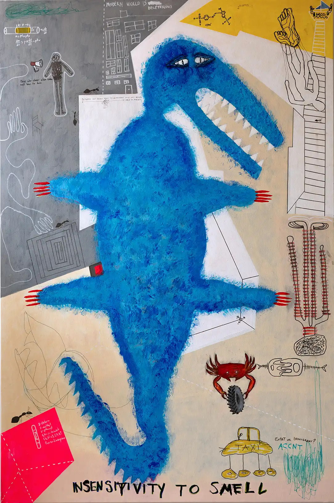
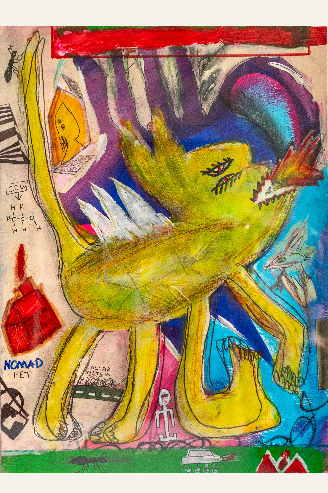
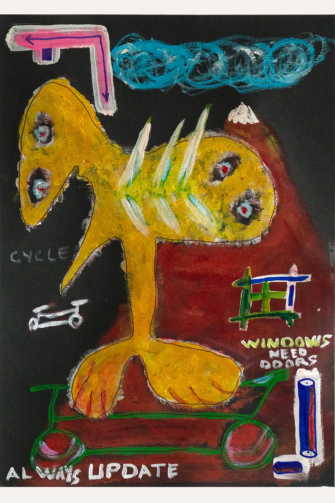

Painting Series
Muscle Memory
Muscle Memory explores the relationship between repetition, identity and the systems that shape behaviour. The works do not focus on individual stories. They examine how habits become beliefs, how beliefs become norms and how repetition gradually transforms into common sense. Across painting, drawing and fragmented visual languages, the series investigates the invisible structures that influence the way we think, behave and understand ourselves.

Escaping Mind
Acrylic on canvas · 2024

Insensitivity to Smell
Acrylic on canvas · 2024

Ruthless Conformity
Acrylic on canvas · 2024

Internalized Oppression
Acrylic on canvas · 2025

Fear Pushes Hope
Acrylic on canvas · 2024

Factory-Farmed Consciousness
Acrylic on canvas · 2024

Safe House
Acrylic on Paper · 2024

Nomad-Pet
Acrylic on Paper · 2024

Always Update
Acrylic on Paper · 2025

Jamais Vu
Acrylic on Canvas · 2024

I Lost My American Dream
Acrylic on Canvas · 2023

Encyclopedia of Sentiments
Acrylic on Canvas · 2025